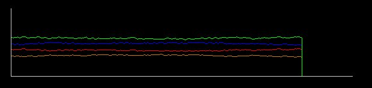

Primero se oprime el botón de selección del lado derecho
 y
al cambiar el cursor (a cursor para
seleccionar), se oprime el botón de la criatura que se desee
colocar, y al fin
se selecciona el lugar donde se piensa colocar a la criatura.
y
al cambiar el cursor (a cursor para
seleccionar), se oprime el botón de la criatura que se desee
colocar, y al fin
se selecciona el lugar donde se piensa colocar a la criatura. Practica
1.
Selección
natural.
El
objetivo
de esta práctica es poner en evidencia el mecanismo de la
selección natural al actuar sobre
una población de seres vivos (el
ejemplo es con lagartijas).
En la
práctica se tiene una población (grupo de organismo en un
mismo espacio y
tiempo) de lagartijas con diferentes proporciones de coloración
entre los
individuos, unos son de color café, y otros de color verde.
Para
mostrar el proceso de selección es necesario crear una cierta
presión sobre la
población de lagartijas, así que la practica cuenta con
un grupo de
depredadores, en este caso gatos.
Los gatos
comen lagartijas, y las lagartijas pueden esconderse mejor si se
parecen mas a
su medio ambiente, de esta manera, después de un tiempo la
cantidad de
lagartijas de color verde o café cambiaran según el tipo
de ambiente en que se
encuentren, por ejemplo si se tiene un pastizal, la lagartija color
verde será
mas difícil de cazar, y con ello, después de un tiempo el
numero de individuos
de color verde aumentara y los de color café disminuirán.
La
selección natural se encuentra representada por la presencia de
gatos, que se
comen a las lagartijas.
La
adaptación al medio ambiente como respuesta a la presión
de selección se
encuentra representada por el cambio en la coloración de los
individuos de la
población hacia parecerse mas a su medio ambiente.
El objetivo
consiste en observar, como los colores en la población de
lagartijas cambian en
el tiempo debido a la presión de la selección natural
(depredación por los
gatos).
Los
botones
que se tienen para modificar el comportamiento del programa son los
siguientes:
Primero
tenemos los dos clásicos de avance y alto, ningún
botón funciona si el avance ha
sido activado, para reactivar la función de los botones, es
necesario detener
el programa por medio del botón de alto.
Después
tenemos el botón para vaciar el tablero (con una escoba) y luego
el botón para
llenarlo de individuos al azar (coloración al azar).
Los tres
siguientes botones son para cambiar el color del tablero, el blanco
(neutro), el
verde y el café asignan su respectivo color al tablero de fondo.
El
siguiente, el botón con una D, determina que alelo es el
dominante, si el
característico para el color café o para el color verde,
el color de fondo del
botón nos muestra cual es dominante en este momento o al cambiar.
Primero se oprime el botón de selección del lado
derecho y
al cambiar el cursor (a cursor para
seleccionar), se oprime el botón de la criatura que se desee
colocar, y al fin
se selecciona el lugar donde se piensa colocar a la criatura.
El
“tablero” de juego.
Abajo, en
la parte en que se grafican los datos la línea verde muestra la
cantidad de
lagartijas verdes, la café de lagartijas cafés.

Y en
líneas rojas el alelo dominante y en
azules el alelo recesivo.
El
programa
Para
iniciar el programa solo se necesita hacer un doble clic sobre el
archivo que
dice practica1, esté se encuentra en el mismo directorio que la
pagina de
inicio.
También
se
puede utilizar la versión opcional del mismo programa, solo con
una interfaz
grafica mas simple y tal ves mas rápido (opcional pero tal ves
mas rápido en
maquinas lentas) cuyo nombre es, practica1-ligero.
Una
practica de ejemplo.
Primero
que
nada abrimos el programa a través del enlace en esta pagina.
Después
oprimimos el botón de llenado con el cual en el tablero aparecen
organismos
distribuidos de manera azarosa.
Luego
podemos oprimir el botón de avance y ver como se mueven los
organismos y como
se da la dinámica en un tipo de piso neutro, es decir sin
ninguno de los
organismos en el tablero favorecido por su color.
A
continuación
oprimimos el botón de alto, y cambiamos el tipo de piso por uno
café o verde, y
oprimimos el botón de avance, y con ello observamos como las
lagartijas que se
parecen mas al tipo de piso son la que comienzan a crecer dentro de la
población gracias a la selección natural.
Después
de
repetir estos pasos no se tiene un mismo resultado de manera forzosa,
en
general es mucho mas probable que las lagartijas que tienen un color
mucho mas
parecido al color del piso sean las que predominen, pero para que se de
este
resultado es necesario que pase algún tiempo en el cual si no se
dan la condiciones
apropiadas, podría ser que incluso la población entera se
extinguiera, es decir
que todos fueran comidos por los gatos, pero esto forma parte dentro de
los procesos
en biología donde no pasa siempre lo
mismo sino que todo se da con una cierta probabilidad.